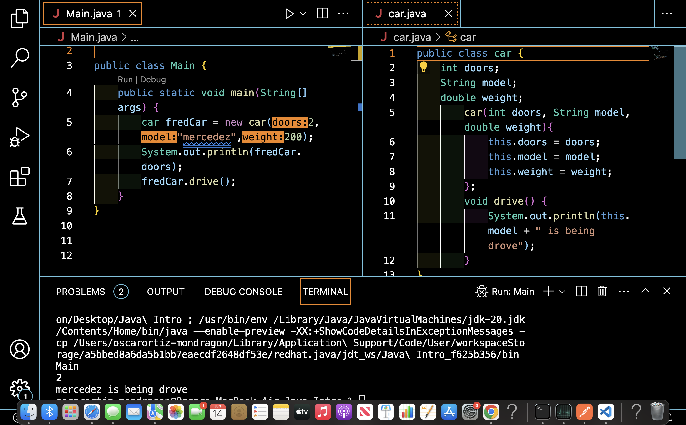
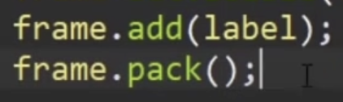
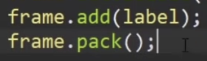

Welcome To Back End
General Back End
What is backend?
While front end focuses more on client side, this focuses more on server side. When we check to see if the username and password match, we will use backend.
Backend composed of three parts.
The backend is SAD
- Server - computer that gets the request. Most common being apache Nginx.
- The App - the app that listens for the request.
- Database - organize the data. With the most common being MongoDB, mySQl, and PostgreSQL
What are Frameworks?
Code that is typically very common that also gives structure to code. Some popular front end frameworks include react and angular, while popular backend ones are django and ruby.
What is an API?
It means application programming interface. Which can either mean documentation or how the application interact with one another.
COMMAND + SHIFT + 5 SELECT Screen capture
Java
What is a Class?
A collection of related code. To make one, simply go onto the file and click the + sign on the Java projects tab and then select class.
Main Method
Whenever we run code, we call the main method so this is needed. To create the main method if not present, simply emmet the word main and select the first one. Magical spell to make the program run.
To write on the terminal
System.out.print("") with S being capital and it being in quotes. However this prints all on one line, using println this will print per line. However the escape sequence of \n can also work as before within the quotes.
Using sysout with Visual studio code will allow us to quickly type the System.out.print statement saving time.
Declaring and assigning variables
We will use int for integers instead of let like in Js. However, long numbers will use long instead of int and they must end with L long x = 12312321323122L. We also have the option of char for one character. If we want a decimal we can use float, and it is convention to end it with a f. float y = 123.01f but a double is better since we don't need the f and we can store more. double y = 234.3Lastly string is a reference data type, so it must be a capital S String = "John"
User Input
User input is done with a package insert. For VS code we can simply enter the emmet for Scanner and all the right imports will occur for us. If we are using an int, instead of nextLine, we will say nextInt otherwise we will get a mismatch. Scanner.next() will allow the next key to be stored.

When getting a user number followed by another method of nextLn we can get the program just releasing all current info without asking the next question since the nextInt will have a \n entered and thus make the machine think that is what we want. A fix for this will be to include the scanner. NextLine after the int is saved as a variable, this will remove the \n.
Basic GUI
We can create basic GUI for questions with using an import Javax.
When using this show input dialogue option, this only takes it as a string, to store as a integer or double we need to parse it to the correct file type
Simple Triangle Line
Basic use of math, remember that we need to declare Math first

Use of Random
To get random values we have to import them, and for the range we state the value inside the parenthesis. If we want to start off 0, we add a + 1 outside the parenthesis as seen in the image.

Strings is Equal method
Whenever we are using strings to compare things, we MUST use .equals since this is proper format.

While Loop
While same as javascript, but here we have the method isBlank which tets to see if something is empty.
Creating arrays
Arrays need to be declared before the array starts, and all data types are consistent. For 2D arrays we can think of the like rows and columns.

Wrappers
Wrappers are essentially a way to make primitive data types into reference data types, which allows us to use more methods, however they take longer to process since we need to go within the wrapper. Called not so differently as we would for int, but wrappers are almost always all the way spelled out and the first letter capital. Integer a = 3
Strings are already reference types, which is way we have always called it with a capital S.
Array Lists
Collection of resizable arrays. They can be added or removed, but can only store reference types. We do need an import of java.util.ArrayList at the top.
We can't use length or simple index, we need to use size, and get respectively. Some pretty popular methods for array list is included as well.


For each loop
Works the same as JS but the phrasing is different, but works the same in theory.

Methods
Similar to functions in JS. These are typically called outside the main. Instead of void we can return the data type we are returning.


Overloaded Methods
Methods that share the same name, but have different parameters. This is okay since each method needs a name and parameters, and these together make the method signature.
Print If
Not like println, takes in two args. The format specifier is placed somewhere in the format string.

Final Keyword
Anything with the word final cannot be changed or altered later into the program. final double pi = 3.142 is a simple example.
OOP
Objects use a class. They contain attributes, or characteristics, and methods, what can it do. In this example we created a new class outside of the main. We then set some basic attributes such as make and color and price and set the methods of drive and break. Not in the first image that there is no way to make a unique car, we will do that next.
Creating new objects
Objects are created with constructors. A big component is the use of the word this, since it always refers back to each newly made object.
Overloaded constructors
These are multiple constructors within a class with the same name, but must have different parameters. Works the same as classes. Remember that they can't have all the same parameters.

How to see class all objects
To see what's in an object, we can go through one by one and do sysout, or we can make a new method inside the class that's called ToString, and once done, at the main folder, we can see the object through "textually" representative.

Array of Objects
Without the .name, we don't be able to see the items.

Pass objects as arguments in a method.
In this what is most important is sending the things you want to be used in the correct area. Here we have garage being able to take cars, but this wouldn't work unless we add a bicycle object into garage too if we wanted to store bicycles.

Static Keyword Modifier
Anything that is static is now a static member. Pretty much, the same class will share the same variable. If we remove the word static, we won't be able to access the variable anymore in a static way. A good way to group up data to see a sum. Static members we use the name of the class itself, and all instances of that class share that static member.

Inheritance
The ability to share attributes and methods of other classes. In order to use inheritance, when we define the class we add the word extends and the class we want to inherits. When to use? When we have more than one class that share things in common.

Method Override
Declaring a method in a sub class, which is already present in the parent class. Works against inheritance, so pretty much in the car example, if we give cars a method of go, which overrides the shared method of go we get from the vehicles class.
Super hero objects
Refers to the parent of an object. Similar to the this keyword. Works with declaring stuff, if you see yourself naming most of the vars in the main one, use that as the super and transfer over those variables onto the other ones.
Abstract keyword
Can be applied to classes and methods. We add it similar to extend, is basically makes us unable to create objects of the methods. If we want to use a method of an abstract, we need to use the word abstract in that method and then call it in the children with an override.
Access modifiers
Add a layer of security. They are private, protected, and public. We will need packages, packaged are a collection of classes. Created in the same way as classes. If we make two package and use default, default can only be used in classed of the same package (default is not a word we add, it's the default if no modifier is added.). The public keyword can be used in any package, and is usable in the whole project. Protected works in different packages, but only if it is a sub class, like with the extend keyword. A private one can only be used in that class even if in the same package.


Encapsulation
Making attributes of a class hidden or private and can only be accessed with getters and setters. We should make them private if not being used. Essentially, when we make variables, we set them to private on the class, such as private int age. Getters can get these values, while setters can be used to change them.
Copy Objects
For copy to work, we need to add it under the methods. And to do it, we need to copy the attributes of car1 to car 2. car2.copy(car1) here when we refer to this under the method, we are talking about car2. And x here refers to car1.
Don't assign two makes to each other, since they will just point to the same memory, and isn't really copying over. car2 = car1.
Interface (might not be in VSCODE?)
A template that can be applied to a class. Like inheritance, but specifies what the class has/must do. Classes can apply more than one, while inheritance can only do one super. We don't need a body, and when adding to a method we use the word implement, and we override it. We must define what the method will do, in this case prey. If we want it to take two, when we use the word implement, we will just add a comma to add more.
Polymorphism
Ability of an object being more than one data type. Here in the first image we can see that all our subclasses of vehicle, but if we chose car as the array, bike and boat wound't work. What they share in common is the vehicle mother class, so we can use that instead and now we can share them all since they all identify as vehicles. If each class has a go method, we can also call them all at once with an enhanced for loop. Data type is vehicle. X is the counter and represents the vehicle we are on, IE bike/car/boat. With the named array being racers.
This only work if the main parent, the vehicle, has the method of class, and essentially works as a method override.
Dynamic Polymorphism
The ability to take many shapes or forms after the program has been run. If we have an animal constructors and we aren't sure if we are doing a cat or dog until we get a user response. In this instance we have a simple speak for animal, and two overrides since both cat and dog also have speak but since they extend into the parent animal, they override it.
Exceptions in Java
When we come across code we believe can lead to exceptions, we can put the "dangerous" code in a catch try. Then in the catch, we will enter what type of error we want to catch, which can be found by first creating the error. IF more than one error, we just add more catches. Exception e is lazy but will catch all errors. Lastly, finally will always print no matter what, seen commonly to close scanners, though make sure the scanner it outside the catch blocks {}.
Files
Here we are checking to see if a file exists in our project folder called secret_message seen at the bottom left. We have to import the dot file, and then we must also use an if statement to look for it. We can check for the file path too but looking under the file and looking into its properties. We can also look for paths with file getPaths for in project only, and getAbsolute for the path the exact path taking into account the whole computer, but with only files on the project being called on.
File Write
For file write we will need a try catch block as well as a import of file writer. The method is the write method. We can also append to the end of the file with append.

How to play audio
We can find samples of audio at Youtube Audio LibraryThough it doesn't work as MP3 files, so you will need to convert them to wav files. Import to note we need to add lots of throws of try catch block to catch missing things otherwise it won't work. We also need to make sure the program doesn't terminate, we can stop this with just waiting for user input with a scanner. We also will create an audio player that uses what we enter to play and stop audio.

JFRAME
A gui window we add components to. Jframes are not visible, we need to set the frame to visible and very small. We can make it bigger with setSize(). We also need a jframe import. We can change the title with setTitle. Remember to close out of frames with the setDefaultClose...(JFrameExitOn....) now when we hit the x we will close it properly, and not just hide it. Resizable will prevent the frame from being resized. We can set an icon with an import called ImageIcon and then set it with frame.setIconImage. We can also create a frame with making the JFrame as a parent class to a child class. For the class method, we need to replace them all with this instead of whatever we called the frame. Now we can call the Jframe if we are doing this second way of creating Jframes.
Labels
GUI component, displays and img or a string or text. Similar to creating a Jframe, even the import is similar. An easily missed step will be adding the label onto the Jframe with the frame.add method. Without changing anything, the string will be center and to the left. Creating an image is straightforward as well, if under the same project folder we don't need to do a path, just call the img. To move the text around, we adjust the vertical or horizontal position, and they are relative to the img. We can also change the color and font, for color in the image it does hexadecimal, but we can also do rgb with just using 0,0,0 (don't include the word rgb, just the 0s and commas). If we want to set a background color, we must have opaque set to true, otherwise nothing will happen, they are a pair. We can also create border, this does need an import. We can also move the whole img and string combo around the label since naturally it will be center vertically, but left horizontally. Lastly we can use pack with help with resizing, just note it must be added last, it won't work if it's not last.
 

JPanel
GUI component that holds other components as a container. We are setting layout to null since we are going to tell it where it goes. We need to do set bounds because of the default. And remember we need to add the panel to the frame.If we have a label, we can add that label onto the panel, this will be done with the panelName.add(label).